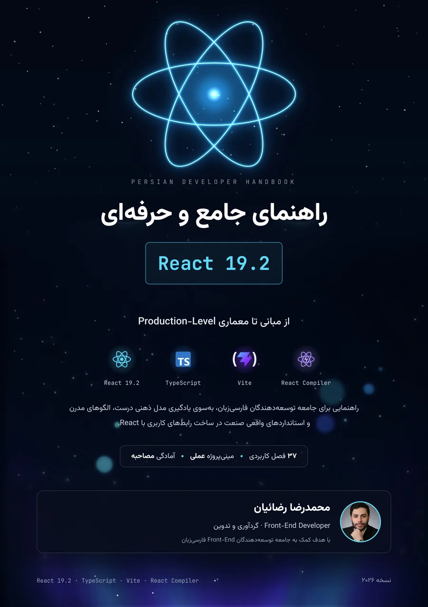

مدل رندر را بفهمید
State، batching، reconciliation و چرخهٔ رندر با تمرکز بر دلیل رفتار کامپوننتها آموزش داده میشوند.
از اولین کامپوننت تا معماری رابط کاربری در Production
راهنمای فارسی و پروژهمحور React 19.2؛ با تمرکز بر مدل رندر، Actions، Suspense، React Compiler، تست و معماری مقیاسپذیر.

محتوا از مفهوم به تصمیم فنی و از تصمیم به پیادهسازی میرسد؛ با توضیحهای متمرکز، مثالهای واقعی و یک مسیر روشن برای ادامهٔ یادگیری.
State، batching، reconciliation و چرخهٔ رندر با تمرکز بر دلیل رفتار کامپوننتها آموزش داده میشوند.
Actions، useActionState، useOptimistic، use، useEffectEvent، Activity و React Compiler در یک مسیر منسجم.
یک پروژهٔ کامل مدیریت وظایف و ۸ مینیپروژه برای تثبیت الگوها، هوکها و تصمیمهای طراحی.
ساختار feature-based، مدیریت state، الگوهای کامپوننت و مرزبندی مسئولیتها در کدبیس بزرگ.
تست با Vitest و Playwright، امنیت، دسترسیپذیری، RTL، Web Vitals و استقرار.
مسیر ارتقا به React 19، خطاهای رایج، پرسشهای سطحبندیشده و واژهنامهٔ تخصصی.
ساختار فصلها از پایه به Production حرکت میکند؛ میتوانید کتاب را پیوسته بخوانید یا از بخش متناسب با نیاز فعلی خود شروع کنید.
JSX، Props، State، Hooks، Actions، Suspense، Context، TypeScript، Routing و پروژهٔ مدیریت وظایف.
Compiler، Performance، مدیریت state، معماری، امنیت، تست، Server Components، استقرار و مهاجرت.
ترفندهای کاربردی، کارگاه ۸ مینیپروژه و بررسی اشتباهات رایج با راهحل.
پرسشهای مصاحبه از Junior تا Senior و واژهنامهٔ فارسی–انگلیسی برای مرور سریع.
نمونههایی واقعی از جلد، ساختار فصل، کد، کارگاه و بخش مصاحبه. برای مشاهدهٔ نسخهٔ کامل هر صفحه، روی تصویر کلیک کنید.
مثالها با TypeScript نوشته شدهاند و بهجای کنار هم گذاشتن APIها، جریان داده، وضعیت pending، خطا و بازخورد کاربر را یکپارچه میکنند.
export function CheckoutForm() { const [state, action, pending] = useActionState(placeOrder, initialState); return ( <form action={action}> <CartFields /> {state.error && <Alert>{state.error}</Alert>} <SubmitButton disabled={pending} /> </form> ); }
همهٔ خروجیهای رسمی از همین صفحه و مخزن پروژه در دسترساند.
نسخهٔ رنگی و قابل جستوجو با فهرست داخلی برای مطالعه روی دسکتاپ و تبلت.
دانلود PDFنسخهٔ بازچینشپذیر راستبهچپ برای موبایل و نرمافزارهای مطالعه EPUB.
دانلود EPUBخروجی سیاهوسفید با پسزمینهٔ روشن و مصرف جوهر کمتر برای چاپ لیزری.
دانلود نسخه چاپاین سه راهنما با زبان بصری و ساختار آموزشی هماهنگ طراحی شدهاند: ابتدا زبان، سپس کتابخانهٔ رابط کاربری و در پایان فریمورک Production.